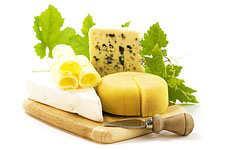

- ГАЗ
- СВЕТ
- ДОРОГИ
- ОХРАНА
Участки 1 1,5 2 гектара по цене 15 соток
Эксперты считают, что размер участка по отношению к постройкам рассчитывается из пропорции один к десяти.
Например, если в планах строительство дома площадью 200-250 кв. м — это минимум 20 соток, гостевой дом-баня 100 кв. м — еще 10 соток, дополнительно отводим 10 соток для барбекю и хозяйственного блока, а детская или игровая зона займет 5-10 соток.


Одним из достояний нашего поселка является Экоферма, которая построена по современным стандартам и обслуживается кадровыми сотрудниками сервисной службы поселка.
Мясо, молоко, яйца мед, овощи и фрукты - этим жители Вотчины снабжены круглый год!
Идея создания Экофермы продиктована стремлением к экологичности того, что мы едим.
Кроме того, животные фермы всегда вызывают множество положительных эмоций не только у детей, но и взрослых: покормить, погладить и пообщаться с любимцем может каждый, под присмотром фермеров.
Экология уже много лет является актуальной темой для жителей Земли. Какова среда обитания: какую воду мы пьем и каким воздухом дышим...
Для нас эти вопросы являются также важными, поэтому мы пригласили Аккредитованную испытательную лабораторию, чтобы провести исследования воды, земли, снега и замерить радиационный фон. Результаты порадовали нас и жителей поселка Вотчина Country Club.
Предлагаем ознакомиться с протоколами исследований:


В Вотчине собрались прекрасные люди. Редкий случай, когда на одной территории все соседи без исключения замечательные.
В нашем поселке можно не только размеренно и с комфортом проводить время. Вотчина — это, в том числе, активный образ жизни и дружелюбие!
Магистральный ГАЗ, свет от 10 кВт на участок, круглогодичные дороги.
Охрана. Сервисная служба.
Жители поселка пользуются всеми благами цивилизации.
Задачи по обустройству участка и мелкий ремонт, Вы можете поручить высокотехнологичной Сервисной службе, которая размещается на территории поселка.
Достаточно сделать звонок диспетчеру.
Аккредитованные подрядчики, качественно и в срок проведут все необходимые работы по строительству домов, ландшафту, водоснабжению, канализации.
Интернет - неотделимая часть современности и комфорта. Уже сейчас в поселке отличный прием 3G интернет от Мегафон. Реальная скорость приема 5,11mbps!
Безлимитный тариф от 450 руб./мес.
В планах прокладка оптиковолоконной линии оператором Мегафон в поселок и предоставление услуг доступа на скорости до 100mbps
В поселок Вотчина ведут три магистрали Федерального масштаба: Ярославское, Горьковское и Щелковское шоссе.
Скоростным по праву признано Ярославское шоссе. Данные о реконструкции и расширении "тонких мест" - Мытищи, Королев, Тарасовка вселяют оптимизм. Поедем быстрее...
Подъездная дорога к Вотчине, а также дороги по самому поселку построены и функционируют с августа 2013 года.
Ширина - 6 метров. Основание выполнено из гравийного щебня, который уложен на толстое основание, выполненное из ПГС (песчано-гравийная смесь).
Круглый год Сервисная служба поселка поддерживает дороги в рабочем состоянии: подсыпает, выравнивает и очищает.
Концепция поселка Вотчина Country Club — большие участки, комфорт и много пространства.
Гектар земли с коммуникациями у нас, обойдется по цене 15 соток в предлагаемых поселках с похожим набором технических и инфраструктурных параметров: охрана, дороги, газ, электричество, расположенных в Московской области.
Ежеквартально, мы проводим акции и делаем специальные предложения. Кроме того, получили признания наши правила для покупателей:
- — 5% скидки от прайс-листа — при 100% оплате
- — рассрочка БЕЗ % на 6 месяцев, 7-12 месяц под 10%, 2-ой год под 14%

"- Кому принадлежит земля?"
"- Земли населенных пунктов - какой налог?"
"- Во что обойдется собственникам владение землей?"
Все эти вопросы мы тщательно изучили и продумали юридически, создавая наш поселок.
Каждый участок в нашем поселке имеет документы о собственности: свидетельство, договора-основания, кадастровый паспорт, координаты.
Кроме того, налогооблагаемая база по участкам оптимальна и экономит ежегодные средства владельцев в десятки раз.
Предлагаем ознакомиться с подтверждающими и разъясняющими документами:
Безопасность жителей нашего поселка одна из важных задач, поэтому на территории есть проверенная служба охраны. Сохранность стройматериалов, построек, имущества, покой семьи обеспечит организованная служба охраны.
У многих из нас мечта жить в своем загородном доме возникает в детстве. Кто-то ясно осознает это желание в зрелом возрасте. Какая она, твоя мечта о загородной жизни?
Место, размер и цена – первый шаг к обретению очертаний мечты. Здесь появляются отличительные нюансы, знание которых помогает при выборе земельного участка.
Место, экология. Если вы хотите свежий воздух, чистую воду, отдаленность от трассы и тишину, выбирайте участок вдали от города. Узнайте, что расположено рядом с выбранным местом. Уточните о наличии промышленных предприятий. Приятным бонусом послужит присутствие в поселке или рядом производителей свежих, экологически чистых продуктов, выращенных на местной земле без пестицидов и антибиотиков. Фермерское хозяйство на территории поселка, созданное с учетом современных достижений добавит вам и вашей семье выбор: чем и как питаться.
Вотчина Country Club находится в 140 км от Москвы, вдали от суеты. Следуя стремлениям экологической чистоте того, что мы едим, на территории поселка работает Эко-ферма. Мы знаем вкус настоящих деревенских продуктов!


Размер. История приобретения 6-ти соток уходит в прошлое. Площадь участка в поселке эконом-класса не превышает 10-12 соток. Выбирая размер своего землевладения, имеет смысл опираться на стратегию будущего развития вашей семьи.
Эксперты считают, что размер участка по отношению к постройкам рассчитывается из пропорции один к десяти. Например, если в планах строительство дома площадью 200-250 кв. м – это минимум 20 соток, гостевой дом-баня 100 кв. м – еще 10 соток, дополнительно отводим 10 соток для барбекю и хозяйственного блока, а детская или игровая зона займет 5-10 соток. Если вы задумали декоративный прудик или выращивание овощей в парнике, мечтаете о прогулках по вишневому саду, соблюдение правильных пропорций решает вопрос с размещением объектов в отведенном пространстве. Вы удивитесь, но количество соток для соблюдения гармонии на участке приблизится к 100 - это 1 гектар. Если же рассчитывать на собственный сад или живописную рощицу и комфортное расстояние до соседей– 2 гектара, окажется в самый раз.
Очевиден вопрос: во что обойдется такое владение?
100 соток в пределах 150 км от МКАД обойдутся по цене 10-15 соток, при расстоянии не дальше 50 км от Москвы. Сумма сделки на землю составит 2-3 млн. рублей.
Вотчина Country Club занимает площадь 320 га. На выбор покупателя 150 участков размером от 50 соток до 5 га. Вам точно хватит места для воплощения своей мечты о комфортной загородной жизни!


Цена и коммуникации. Если идея с владением полноценным участком, размером 1-2 га вам подходит, то появляется резонный вопрос о качестве сервиса и наличии комплексных коммуникаций в этом экологически чистом и просторном месте.
Наличие действующих коммуникаций весомый аргумент при выборе. Электросети, построенные дороги, газ – неотъемлемая часть для комфортного проживания и благоустройства участка. Наличие охраны, обслуживание общественных территорий, профессиональной и технически оснащенной сервисной службы – ответ на потребность в безопасности и уходе за участком.
Стоит заметить, что цены на коммуникации и сервисы вас приятно удивят. Это связано с иной ценовой политикой районов удаленных от Москвы.
Вотчина Country Club - большие участки, комфорт и много пространства. В поселке существует оптимальный набор технических и инфраструктурных параметров: охрана, дороги, газ, электричество, интернет. В сервисной службе работают профессиональные штатные сотрудники. Охранные функции выполняет лицензированный ЧОП. Кроме круглосуточного видеонаблюдения и патрулирования по реперным точкам в поселке, каждый собственник может подключить персональную охранную сигнализацию. Абонентская плата составит 500 рублей в месяц.
Ландшафт. При выборе места, размера, цены, задействованы как рациональные аргументы «за» и «против», так и впечатления, эмоции и ощущения «своего места». Вы рассмотрели десятки поселков и сделали выбор в пользу одного, подходящего по уровню. На завершающем этапе осталось определиться с пространством для себя и своей семьи, которое предстоит обустроить. Вам помогут ответы на вопросы:
- Какое окружение нравится: открытое или с выходом в лес?
- Будет ли водоем на участке?
- Где будет расположен участок: на возвышенности или скрыт от глаз? Участок будет ровный или с уклоном?
- Какие идеи и замыслы по реализации пространства необходимо осуществить?
Освоение большого участка – дальновидная стратегия. При реализации плана перспектива закладывается изначально, чтобы затем, как в конструкторе складывать части в целое, исходя из финансовых и личных возможностей.
Каждая местность особенная. Рассчитывать на виды и простор возможно в поселке, занимающем не менее 200 гектар, где участки имеют площадь не менее 1 гектара.
При разнообразном и переменном ландшафте легко и быстро облагородить то, что уже дала природа. Идеи по эко-дизайну лежат на поверхности.
К достоинствам ровной поверхности относится: удобство при возведении дома и благоустройства сада, планомерное проникновение воды в почву при поливе растений.
Расположение леса рядом с домом - приятная прохлада в летний зной и изобилие зелени. Лес по границе участка, сосны, ели, березы на самом участке - ощущение гармонии и спокойствия.
Переменная местность характерна наличием как холмов, склонов, так и низменности. Склон холма открывает виды на прилегающие пейзажи. Он наполнен солнечным светом, а главный бонус – создание альпийской горки или водопада.
Низменное расположение участка облегчит поиск воды, а хорошая влажность почвы обеспечит благоприятный рост растений. Достоинством такой местности станет искусственный водоем.
Вотчина Country Club – это переменный ландшафт от равнины до склона, от леса до реки. Фантазируйте в поселке Больших участков!

Строительство и обустройство. Работу по выбору участка мы проводим ради того, чтобы добраться до наслаждения от чаепития на летней веранде своего великолепного дома, где солнечные лучи пробиваются через легкую занавеску в просторную спальню. Впереди предстоит этап планирования дома, территории вокруг, и непосредственно реализации замыслов и планов.
Сегодня загородное домостроение – это множество технологий, материалов и цен. Одним из первых шагов по изучению рынка строительства станет поход на выставку и анализ проектов, планировок, отделок. Окажет поддержку и грамотный архитектор с рекомендациями. Современные строительные компании предлагают широкий спектр услуг и необходимые консультации. Остается найти достойную компанию по домостроению. Как правило, домостроители делятся на две основные категории:
- компании «полного цикла»: производят строительный материал, проектируют и строят дома
- компании-подрядчики: строят дома из закупленных материалов.
Далее, строителей можно классифицировать по специализации материалов: бревно, брус, каркас, кирпич, различные блоки. Преимущество производственной компании с собственным деревообрабатывающим заводом или комбинатом, которая будет строить вам дом, заключается в полном цикле обслуживания, включая материалы. Организация, специализирующаяся исключительно на строительных услугах более разнообразна и многофункциональна в возведении каркасов и блочных домов. Дома из оцилиндрованного бревна или клееного бруса, имеет смысл заказывать только через компании с хорошими производственными мощностями по заготовке и переработке леса.
Вотчина Country Club – организованный поселок с участками без подряда. Мы рекомендуем добросовестных и проверенных партнеров по строительству домов и обустройству участка. Большую часть работ вы можете заказать через Сервисную службу, прямо в поселке. Компания ДомЭко – строит качественные дома из бревна и бруса.
.jpg)
.jpg)
Инфраструктура и общество. Устав от шума и суеты, все чаще, горожане стремятся на природу, подальше от цивилизации и шумного города. Но наличие комфорта, удобства и приятного общества остается для большинства из нас важным критерием.
Соседи, круг общения, занятость детей, доступность магазина, медицинской помощи, на все это стоит обратить внимание.
Вотчина Country Club – объединяет людей с семейными ценностями, заботящихся о детях и родителях. Это деловые и успешные люди, которые получают удовольствие от загородной жизни, от природы, свежего воздуха и пространства. Для комфорта мы организовали общее пространство ВОТЧИНА-ПАРК: библиотечный зал, прокат, пляж, детскую и спортивную площадки. Лес, озеро, пруды, родники, контактный зоопарк, магазин фермерских продуктов и удивительных вещей, офис сервисной службы, Купель и поклонный Крест – места доступные жителям поселка. Школа, детский сад, больница, магазины, банк расположены в Бавленах, всего в 3 км.
Грунт и глубина залегания грунтовых вод. Существенная часть в строительстве дома – фундамент, подвал и подпол. Обязательно узнайте, как близко к поверхности находится вода. Иногда могут понадобиться дополнительные работы, и возникает потребность создания дренажной системы. Квалифицированный персонал при помощи современных технологий найдет решение и даст рекомендации.
Состав почвы определяет тип фундамента будущих построек и значим для сада и огорода. Оптимальный вариант - плотный грунт с небольшим содержанием глины.
В Вотчина Country Club преобладают суглинистые почвы. Это промежуточный вид грунта между песчаными и глинистыми.

Назначение земель. Статус земельного участка, подразумевает совокупность двух правовых характеристик: категорию земель и разрешённое использование – это и есть правовая форма владения, вид собственности. Построить и зарегистрировать жилой дом возможно на землях с разрешенным использованием под дачное строительство или под ИЖС. На землю оформляется свидетельство о собственности с кадастровым планом. Как и в любом свидетельстве на недвижимость, проверьте документы-основания, которые указаны в бланке. Если вы, сомневаетесь, что ваших знаний достаточно, чтобы изучить документы и сделать верные выводы, лучше обратиться к юридическим услугам.
В Вотчина Country Club владелец земли получает два свидетельства на собственность:
Объект права 1: Земельный участок, категория земель: земли сельскохозяйственного назначения, разрешенное использование: для сельскохозяйственного производства.
Объект права 2: Земельный участок, категория земель: земли сельскохозяйственного назначения, разрешенное использование: ведение дачного хозяйства.
Пусть загородная жизнь принесет вам удовольствие на всех этапах – от идеи до ее воплощения, включая все промежуточные процессы и события!
 |
|
Следуя стремлениям к экологичности того, что мы едим, на территории поселка Вотчина Country Club создана эко-ферма, построенная по современным стандартам.
Фермерское хозяйство развивает молодая семейная пара, жители поселка — Артем и Татьяна. Они обосновались на Вотчине и занимаются переработкой молочных продуктов, производят сыры различных сортов, творог, кефир, выращивают овощи и фрукты, а также обустроили мини-пекарню.
Эко-ферма «Вотчина» небольшая, домашняя и душевная. Она состоит из двора для коров, коз, овец, птичника для уток, кур, индюков, гусей и стерильного помещения для сепарирования парного молока и хранения продукции.
Для нас самое главное — это не количество произведенной продукции, а качество и свежесть, комфорт и здоровье наших жителей.
 |
 |
Продукты с нашей эко-фермы всегда свежие и отличаются настоящим вкусом — вкусом деревенских продуктов.
Делая заказ продуктов с эко-фермы, наши жители могут быть уверены, что:
- Мы производим небольшой и качественный ассортимент только для своих! Все продукты строго местного происхождения, это позволяет им дольше сохранять пищевую ценность и полезные свойства. Они просто не успевают портиться!
- Овощи, ягоды, фрукты, зелень, грибы всегда свежие, так как собираются непосредственно «под заказ»
- Вкус наших фермерских продуктов настоящий, насыщенный, так как при выращивании мы не используем добавки для ускорения роста и химических удобрений. Фермеры применяют только натуральные органические удобрения, поэтому продукты чистые и безопасны для здоровья.
- При самом производстве, фермеры осознанно отказались от добавок, консервантов, глутаматов, подсластителей, загустителей и прочих имитаций вкуса для долгого хранения.
|  | |
Эко-ферма «Вотчина» — гарантия натуральных и экологически чистых продуктов, выращенных на плодородных землях Владимирского Ополья.
Вы получаете натуральные и свежие продукты прямо к столу!
Вотчина Country Club расположен в 140 км от Москвы, в самом сердце Золотого кольца, в десяти километрах от города Юрьев-Польский, в трех - от Бавлен. Добраться до поселка можно по Ярославскому, Горьковскому или Щелковскому шоссе.
При движении из Москвы вы можете воспользоваться одним из маршрутов:
- По Ярославскому шоссе (М 8) прямо до Торбеевского озера направо на вторую бетонку (МБК А 108), прямо 38 км до поворота налево на Киржач, Кольчугино, далее 71 км через г. Киржач, г. Кольчугино, до поселка Бавлены
- По Ярославскому шоссе (М 8) прямо 81 км до поворота на г. Александров (Двориковское шоссе Р 75), далее 86 км через г. Александр, г. Кольчугино до поселка Бавлены.
- По Щелковскому шоссе (А 103) 140 км через г. Черноголовка, г. Киржач, г. Кольчугино, до поселка Бавлены
- По Горьковскому шоссе (М 7) 69 м до д. Ожерелки, поворот налево на вторую бетонку (МБК А 108), прямо 46 км до поворота налево на Киржач, Кольчугино, далее 71 км через г. Киржач, г. Кольчугино, до поселка Бавлены
Время в пути на автомобиле около двух часов. Но пробки на выезде из Москвы – бич всех загородных направлений. Реконструкция Ярославского и Щелковского шоссе позволит разгрузить движение и увеличить пропускную способность дорог. В настоящее время на магистралях ведутся строительные работы.
Ярославское шоссе: участки реконструкции

Проект реконструкции включает в себя расширение Ярославского шоссе на участке от Королёва до Пушкино, включая объезд Тарасовки. Реконструируемый участок начинается почти сразу за новой Королёвской развязкой с путепровода над монинской железнодорожной веткой. Его будут расширять с 3 до 5 полос. После окончания работ проезд от центра Москвы до Сергиева Посада займёт не более часа.
По словам губернатора Московской области Андрея Воробьева, после завершения реконструкции Ярославского шоссе его пропускная способность возрастет до 200 тысяч машин в сутки.
В июле 2013 года открылась первая эстакада на Ярославском шоссе в районе выезда с улицы Вешних Вод, а реконструкция эстакады на пересечении с Малыгинским проездом позволила организовать движение без светофоров на участке Ярославского шоссе от МКАД до Третьего транспортного кольца на протяжении более 12 км.
Работы на двух участках Ярославского шоссе планируют завершить к октябрю-ноябрю 2015 г. Участок с 16-20 км - до въезда в Королев и развязки на Пионерскую улицу и участок на 22-27 км. С 16-го по 20-й километр, то есть от МКАД до расширения перед Мытищинской развязкой, Ярославское шоссе расширят с 3 до 5 полос в каждом направлении. С обеих сторон устроят 2-полосные дублёры для поворотов. В итоге будет по 7 рядов в каждую сторону.
Заметным элементом участка станет и новая развязка. Для тех, кто едет со стороны Москвы и хочет повернуть налево в Мытищи на улицу Фрунзе, в 2,5 км от МКАД на Ярославке построят "лепесток" - почти такой же, как и у поворота на Олимпийский проспект, в двух километрах дальше по дороге.
Также, по словам зампредседателя правительства региона Петра Иванова, еще один участок эстакады – с 27 по 29 км - будет сдан в октябре 2016 г.
Щелковское шоссе: планы и сроки реконструкции
Работы по реконструкции Щелковского шоссе планируют завершить до конца 2015 года. Всего на Щелковском шоссе реконструируют 13,5 километра дороги от станции метро "Красносельская" до МКАД. Трассу расширят до трех-четырех полос, построят 10 километров боковых проездов и съездов, оборудуют заездные карманы для общественного транспорта и парковки. В результате увеличится пропускная способность дороги, и снизится перегрузка на перекрестки.
Положительную динамику сразу отметили в Вотчина Country Club – добираться до поселка стало свободнее.
«Своим ходом» на Вотчину
Отсутствие автомобиля, не повод отказываться от загородной жизни на природе. Доехать до поселка можно «своим ходом» на автобусе по Щелковскому шоссе. Этот способ наиболее популярен у наших сотрудников. Для удобства они составили удобную схему проезда. Время в пути составляет чуть более 3 часов.
В настоящее время реконструкция Щелковского и Ярославского шоссе идет полным ходом.
Подбор
участка
Ипотечный калькулятор
на покупку земельного УЧАСТКА и ДОМА
Пожалуйста, сообщите контакты и мы вышлем прайс-лист
по Вашему запросу на e-mail